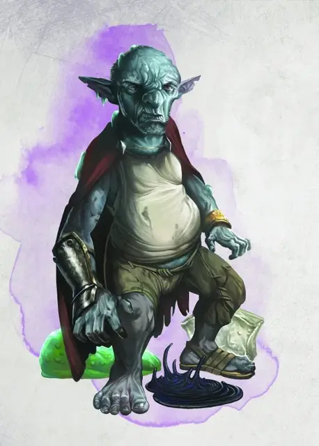

Король Пудингов
The Pudding King
Маленький Гуманоид (Гном, Перевёртыш), хаотично-злой, именной НИП

Класс Доспеха 13 (16 с доспехами мага)
Хиты 49 (9к6 + 18)
Скорость 30 футов
| мод | спас | ||
|---|---|---|---|
| СИЛ | 10 | +0 | +0 |
| ЛОВ | 16 | +3 | +3 |
| ТЕЛ | 14 | +2 | +2 |
| мод | спас | ||
|---|---|---|---|
| ИНТ | 12 | +1 | +1 |
| МДР | 8 | −1 | −1 |
| ХАР | 17 | +3 | +3 |
Навыки Восприятие +2, Выживание +2, Магия +4, Скрытность +6
Сопротивление урону кислота, яд
Иммунитет к состояниям отравление
Чувства тёмное зрение 60 футов, пассивное Восприятие 12
Языки Бездны, Гномий, Подземный, Терран
Опасность 4 (1100 опыта)
Бонус мастерства +2
Особенности
Каменный камуфляж. Король Пудингов обладает преимуществом к проверкам Ловкости (Скрытность), совершаемым, чтобы спрятаться на каменистой местности.
Гномья хитрость. Король Пудингов обладает преимуществом к спасброскам Интеллекта, Мудрости, Харизмы против магии.
Врождённое колдовство. Базовой характеристикой Короля Пудингов является Интеллект (Сл спасброска от заклинаний 12). Он имеет врожденную способность к накладыванию следующих заклинаний без нужды в материальных компонентах:
• Неограниченно: необнаружимость [nondetection] (только на себя);
• 1/ день каждое: глухота/слепота [blindness/deafness], размытый образ [blur], маскировка [disguise self].
Безумие. Король Пудингов обладает преимуществом к спасброскам против очарования и страха.
Использование заклинаний. Король Пудингов – заклинатель 6-го уровня. Его базовой характеристикой является Харизма (Сл спасброска от заклинаний 14, +6 к попаданию заклинательными атаками). Король Пудингов знает следующие заклинания чародея:
• Заговоры (неограниченно): брызги кислоты [acid splash], свет [light], волшебная рука [mage hand], ядовитые брызги [poison spray], фокусы [prestidigitation];
• 1 уровень (4 ячейки): псевдожизнь [false life], доспехи мага [mage armor], луч болезни [ray of sickness], щит [shield];
• 2 уровень (3 ячейки): корона безумия [crown of madness], туманный шаг [misty step];
• 3 уровень (3 ячейки): газообразная форма [gaseous form], зловонное облако [stinking cloud];
• 4 уровень (3 ячейки): усыхание [blight], смятение [confusion];
• 5 уровень (1 ячейка): облако смерти [cloudkill].
Действия
Боевая кирка. Рукопашная атака оружием: +3 к попаданию, досягаемость 5 фт., одна цель. Попадание: Колющий урон 4 (1к8).
Изменение формы. Король Пудингов магическим образом превращается в слизь или принимает обратно свою истинную форму. Он также возвращается в свою истинную форму, если умирает. Любое снаряжение, которое он носит с собой или на себе, поглощается новой формой. В форме слизи Король Пудингов сохраняет свое мировоззрение, хиты, Кости хитов, а также показатели Интеллекта, Мудрости и Харизмы, ровно как и способность выполнять данное действие. Остальные его характеристики и способности заменяются теми, которыми обладает новая форма.
Создание зелёной слизи (Перезарядка после продолжительного отдыха). Король Пудингов создает пятно зелёной слизи. Слизь появляется на стене, потолке или полу в пределах 30 футов от Короля Пудингов.